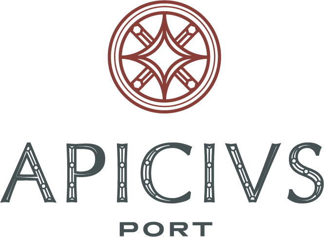
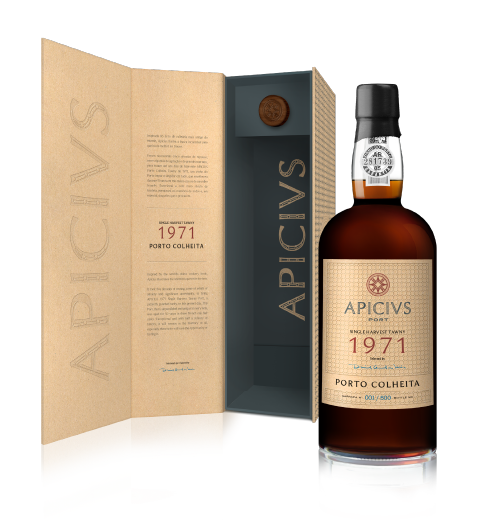

APICIUS.
THE TIRELESS QUEST
FOR THE BEST DOURO
HAS TO OFFER.

Inspired by the world's oldest
cookery book, Apicius illustrates
the relentless quest for the best.
The best ingredient, the best combination, the best drink. With this focus and a constant
drive to
explore, to find and to deliver an unrivalled product of superior quality, Apicius turned
the ambition
and daring of Marcus Gavius Apicius into the brand's own approach. The eccentric 1st century
Roman gourmet, whose life's purpose was to transform noble and refined foods into unique
recipes, drives and enhances the roots and values of the brand.
The Apicius brand, just like the recipes in that book, also aims to present the best the
Douro has to
offer to the market, with the uniqueness that is recognized for this region alone. Although
the
history of the area stretches back to 1756, Apicius believes that the immensity and quality
offered
by the Douro allow it, even today, to continue to create, to innovate and to find rarities
within that
which is the world's first Demarcated and Regulated Wine Region. It is still able to
surprise and
delight the connoisseurs of these wines.
Apicius is driven by the constant ambition to elevate the palate and raise its
sophistication as well
as to obtain the best possible result from the best grapes. The eternal dissatisfaction of
Apicius
conveys the spirit and nobility of the figure who gives his name to the brand, striving to
achieve a
superior, consistent and high-quality positioning for a rarity that only this region has
been able to
preserve to this day.
SINGLE HARVEST TAWNY
1971
PORTO COLHEITA
It took five decades of resting, some of which of anxiety and significant uncertainty, to bring
this patiently guarded rarity to this present day, “forgotten” while ageing, a paradigm of the
evolution of the best old Ports, which we now present.
A veritable gift of time, which we decided to bring to life in an unrepeatable manner in this
jubilee year of its harvest, in 500 exclusive bottles, numbered and signed, presented in a
special
edition that consists of special packaging, a booklet telling its history and a certificate
attesting
to its authenticity.
This is an extremely rare harvest, quite probably the rarest harvest from the 1970s; APICIUS
1971
Single Harvest Tawny Port is thus a Port that is unparalleled and unique in every way, one that
will astound all those who have the pleasure and the privilege of tasting it, drinking it…
and sharing it.
THE PERFECTION OF THE
ETERNAL QUEST FOR THE BEST.

APICIUS 1971 Single Harvest Tawny Port is most probably the last tawny Port from the 1971
harvest kept in casks up to the present day. It was aged for 50 years in three French oak
half casks and may still be kept in the bottle for a few more years.
Almost as though a superb spice, APICIUS 1971 Single Harvest Tawny Port motivates and
drives the palate's elevation and sophistication while maintaining the brand's consistency,
superior quality and audacity that gives it its name.
This is an exceptional Port, with half a century of history, which will remain in the
memory of all, especially those who will have the opportunity of tasting it.
An ode to the incomparable
singularity of the Douro
Demarcated Region.
Bright mahogany core that fades to a broad amber rim of discreet olive-green hints.
The first impression is balsamic, with sawed oak and cedar making for an opulent nose, a
core of
brown sugar, cane honey, coffee beans and walnuts, with subtle buttery notes and delicate
saline
notes, a touch of curry and small sweet and sour notes of wild honey and green tea; always
in a
crescendo of aromatic complexity, always elegant, with nuances of wildflowers, pollens and
dried
herbs; all always accompanied by a slightly woody and balsamic background, reminiscent of
cardamom, with touches of black pepper and tobacco leaf.
It is full, sweet and very long on the mouth, with evident notes of walnuts, dried tangerine
peel,
coffee and cardamom, in a surprising crescendo all-encompassing, unctuous and very fresh,
with
exceptional acidity. Almost unending, leaving lasting balsamic flavours and sweet and sour
notes of
dried physalis and wild honey.